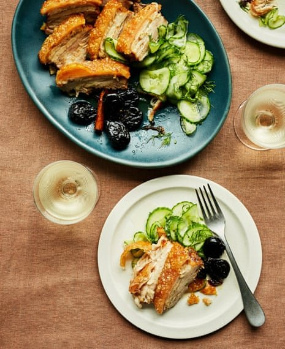

Danish roast pork with pickled prunes and sweet cucumber

For the pickled prunes
For the cucumber salad
For the pork
Make the prunes at least a day ahead. Heat the white-wine vinegar with the sugar and spices, stirring a little to help the sugar melt. Once it has melted, boil until the liquid has reduced by one-third and is quite syrupy. Add the prunes and simmer very gently for about 10 minutes. Put the prunes in a sterilised preserving jar (wash it in boiling water and put in a low oven for 15 minutes), then pour over the syrup, cover and leave to plump up.
For the pickled cucumber, cut off and discard the ends of the cucumber, then slice it very finely: the slices should be almost transparent. Layer in a colander, sprinkle with a teaspoon and a half of salt, then mix with your hands, place a plate on top to weigh it down and set the colander over a bowl for the juices to run out into. Leave for a couple of hours. Mix the cucumber with the rest of the salad ingredients and cover until you are ready to serve. (If I’m in a hurry, I sometimes skip the salting, in which case mix the sliced cucumber with the vinegar and flavourings and serve it immediately.)
For the pork, crush the spices with some salt in a mortar. Add two tablespoons of oil, then rub this all over the pork. Cover and refrigerate for an hour, or overnight, if you can.
Heat the oven to 240C (220C fan)/475F/gas 9. Rub the skin of the pork with more oil, then season all over with salt and pepper, pressing the salt flakes into the skin. Roast skin side up in the hot oven for 30 minutes.
Pour half the white wine around the pork and turn down the oven to 190C (170C fan)/350F/gas 5. Cook the pork for a further hour and a half, pouring the rest of the wine around the joint about half an hour before the end of cooking time.
Take the pork out of the oven, cover the flesh with foil but leave the crackling uncovered so it stays crisp, and leave to rest for about 15 minutes. Carve and serve with the pickles.